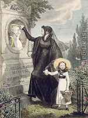

Kiddushin 35 - Women Are Obligated in Some Mitzvot but Exempt from Others
Negative commandments of the Torah apply equally to women and men. Even though the Torah says in many places, "Speak to the sons of Israel," the following phrase makes men and women equal: "When a man or a woman commit any sin that men commit."
Another phrase, "These are the ordinances that you shall set before them," equates a woman to a man in all the laws involving monetary payments.
Women are exempt from the prohibition of cutting off peyot (corners of the hair on the head) and a daughter of a Kohen is allowed to visit a cemetery.